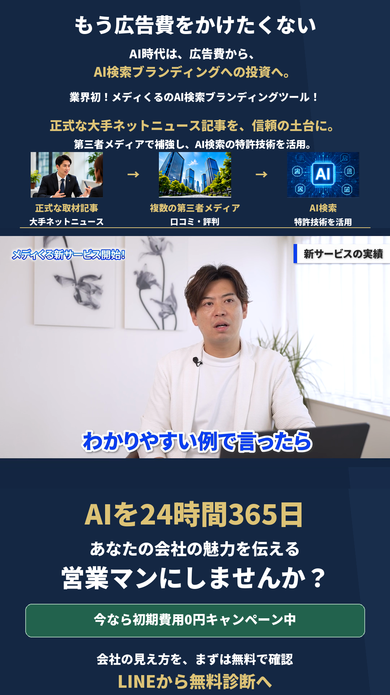
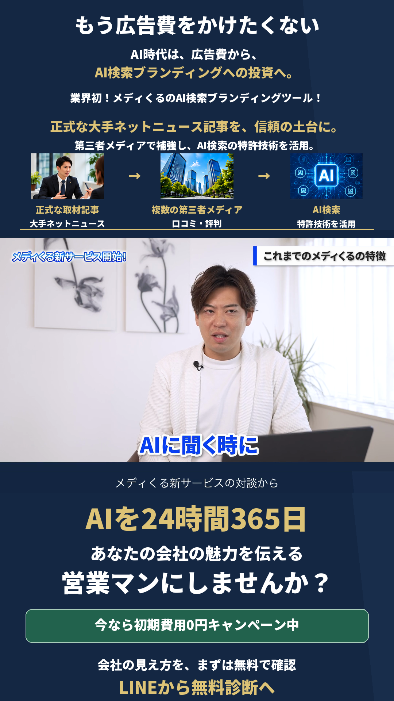
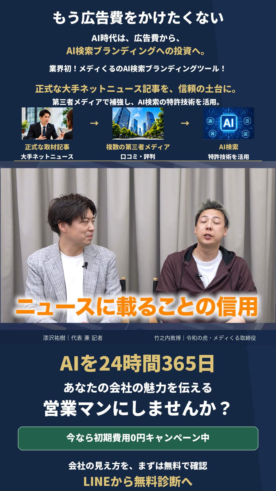
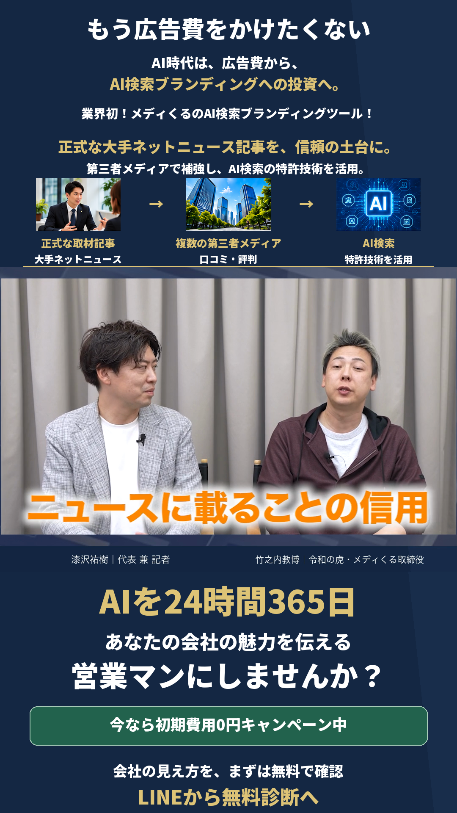
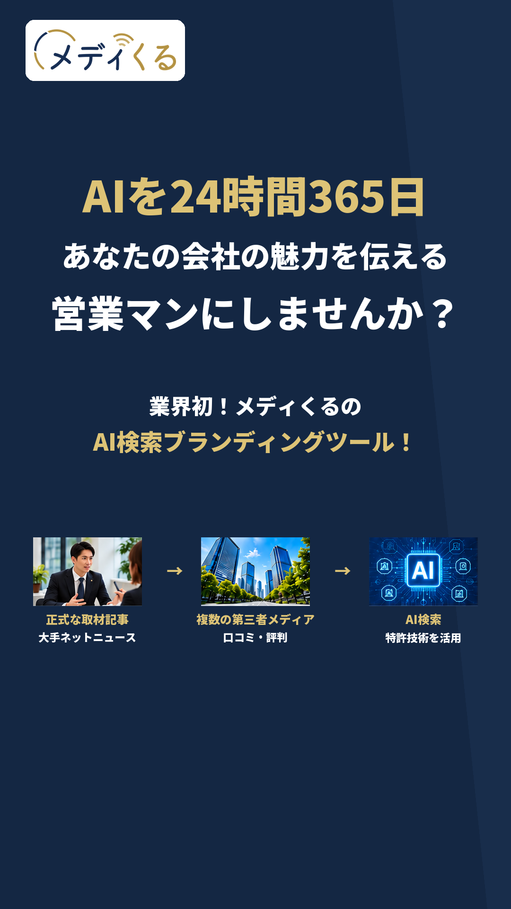

静止画 A
広告費の悩みから、営業マンの価値へ

現行画像を確認する

現行の2静止画・5動画を活かした変更案です。背景・原写真・3特徴の画像と、対談の発言内容を保ちます。
もう広告費をかけたくない。
AI時代は、広告費から、AI検索ブランディングへの投資へ。
正式なニュースを信頼の土台に、AIを会社の営業マンへ。


BGM付きで画面の順と切り替えを確認できます。新しいナレーションは未収録です。
対談では新コピーを編集見出しとして使い、会話の音声と発言字幕を活かす案です。
治療院・不動産の既存の会話と事例を保持。新訴求は編集見出しとして表示し、本人の発言へ挿入しない。

広告費の悩み → AI検索ブランディングへの投資
残す内容：人物の映像と会話の出だし正式な大手ネットニュース記事を信頼の土台に。第三者メディアで補強し、AI検索の特許技術を活用。
残す内容：元の発言と焼き込み字幕LINEから無料診断へ。今なら初期費用0円。
残す内容：既存のCTA位置と基本デザイン既存の会話音声・速度・字幕を保持。新見出しを話者の発言として扱わない。
会社の評価・口コミ・取材記事を扱う既存の会話を保持。ニュースが信頼の土台になる順に見出しを整理。

広告費の悩み → AI検索ブランディングへの投資
残す内容：人物の映像と会話の出だし正式な大手ネットニュース記事を信頼の土台に。第三者メディアで補強し、AI検索の特許技術を活用。
残す内容：元の発言と焼き込み字幕LINEから無料診断へ。今なら初期費用0円。
残す内容：既存のCTA位置と基本デザイン既存の会話音声・速度・字幕を保持。新見出しを話者の発言として扱わない。
「信用だよ」「ニュースに載るっていうことね」とプレスリリースとの比較を一続きで保持。

広告費の悩み → AI検索ブランディングへの投資
残す内容：人物の映像と会話の出だし正式な大手ネットニュース記事を信頼の土台に。第三者メディアで補強し、AI検索の特許技術を活用。
残す内容：元の発言と焼き込み字幕LINEから無料診断へ。今なら初期費用0円。
残す内容：既存のCTA位置と基本デザイン既存の会話音声・速度・字幕を保持。新見出しを話者の発言として扱わない。
ニュース記事の検索表示から、掲載による信用の話へつなぐ現在の2区間を保持。

広告費の悩み → AI検索ブランディングへの投資
残す内容：人物の映像と会話の出だし正式な大手ネットニュース記事を信頼の土台に。第三者メディアで補強し、AI検索の特許技術を活用。
残す内容：元の発言と焼き込み字幕LINEから無料診断へ。今なら初期費用0円。
残す内容：既存のCTA位置と基本デザイン既存の会話音声・速度・字幕を保持。新見出しを話者の発言として扱わない。
タイトル直後の3名紹介、正式ニュースの違い、3時点の実測→口コミ70.1%→2030年90%当社想定の順を維持。既存イラストと音演出を活かす。

悩み → 投資先の転換 → AI営業マン → 業界初のサービス名
残す内容：誕生の音演出と、タイトル直後の3名紹介一番の違いは、大手ネットニュースへの掲載を信頼の土台にすること。
残す内容：現行のデジタルニュース掲載イラストニュースの土台 → 第三者メディアで補強 → AI検索技術の順を強調
残す内容：数値・出典・仮説の区別・説明順無料診断で、御社の見え方と改善点を確認。ご参加後に御社向けレポートをご案内。
残す内容：初期費用0円と控えめなLINE導線採用後は同じ話者・設定で全文を1回連続生成する案。場面ごとの声の継ぎ足し・局所速度変更を行わない。今回は新音声未生成。

「無料相談」の表記を無料診断へそろえ、既存の初期費用0円とLINEへの導線を残します。
説明動画は、同じ話者・同じ設定の連続した音声で更新する案です。
見出し：大手ネットニュースの信頼を、AI検索へ。
説明：正式なニュースを土台に、第三者メディアとAI検索の特許技術を活用。
既存の正式画像・動画は上書きしていません。広告設定・公開・予算・計測・リンク先の変更は行っていません。